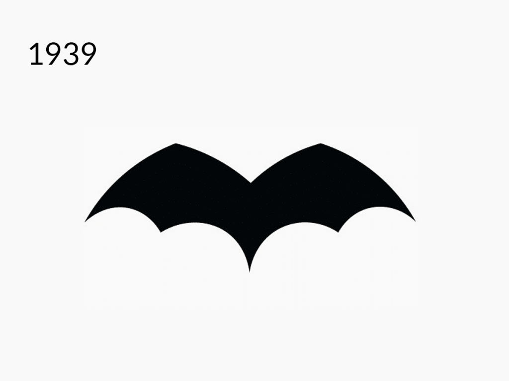
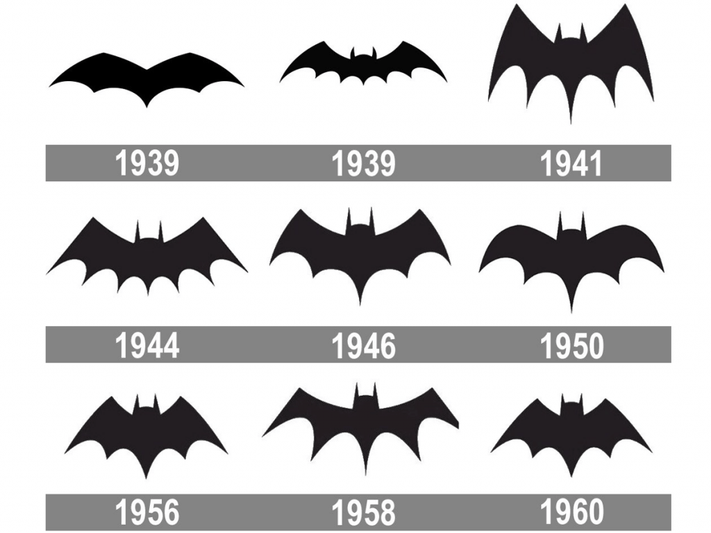
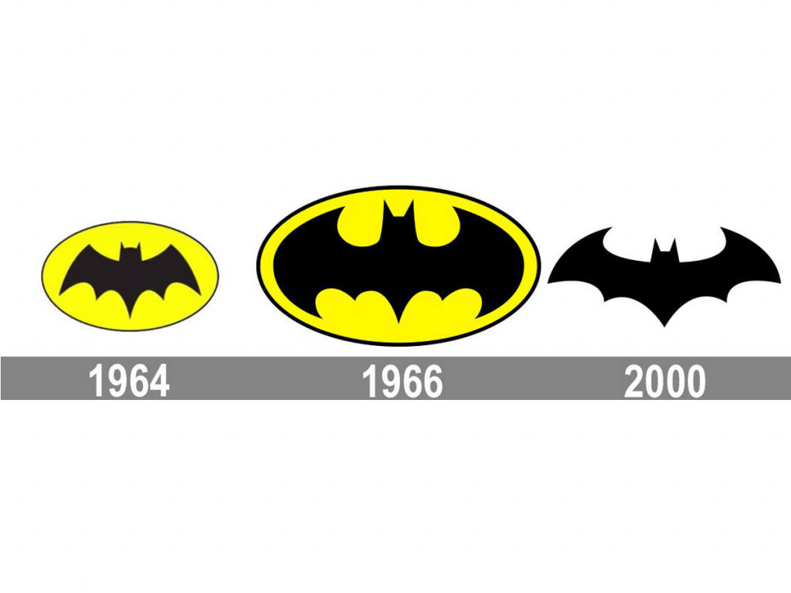

A história da criação do logo
O super-herói Bruce Wayne (Batman) apareceu pela primeira vez na capa de uma história em quadrinhos de detetive em 1939. Sua história explica a escolha incomum do logotipo.
Diz a lenda que quando criança o menino testemunhou o assassinato de seus pais e decidiu dedicar a sua vida à luta contra os criminosos. Um morcego se tornou a personificação desta missão como o símbolo da batalha contra o mal e a busca pela justiça. Cada vez que se supera e realiza um feito, o herói se fortalece e nunca recorre a métodos desonestos de luta.
A primeira versão do logo era minimalista. O animal não tinha orelhas ou cabeça, e a própria imagem ocupava uma pequena área do traje em comparação com versões que viriam no futuro.
A Evolução do Logo em Filmes e nos Quadrinhos
Um morcego preto se tornou a marca do Batman nas décadas seguintes. No entanto, essa imagem mudou cerca de 30 vezes – principalmente devido ao número de pontas no patágio, formas e detalhes. E os mascotes do super-herói em quadrinhos e filmes eram, muitas vezes, diferentes.
Testando as Formas
Logo após a sua aparição, o logotipo dobrou de tamanho, o animal ganhou cabeça e orelhas, e o número de pontas nas asas aumentou de cinco para sete (nos anos seguintes, isso mudou constantemente). Em 1941, a imagem adquiriu um estilo gótico – as asas foram esticadas e afiadas.
Em 1943, o super-herói apareceu pela primeira vez em uma série de TV. Embora o emblema no peito fosse pequeno, os detalhes foram trabalhados com mais cuidado do que nas revistas. E na série do final dos anos 40, além das veias azuis em suas asas, o morcego ganhou orelhas redondas pela primeira vez. Naquela época, o logo tinha uma aparência semelhante ao das revistas.
Os anos 50 foram marcados por mudanças no formato. Primeiro ele foi arredondado e depois ficou mais fino e largo.
Uma Elipse Amarela
O ano de 1964 se tornou um marco para o logotipo. Pela primeira vez ele foi colocado dentro de uma elipse amarela. Existem muitas lendas sobre os motivos dessa decisão. De fato, o motivo era simples – abrir uma nova era no design de logotipo. Dois anos depois, a imagem foi aprimorada. O morcego “arredondou” suas asas para se ajustar à forma da elipse. Ao mesmo tempo, o ícone apareceu em uma nova série de TV sobre Batman.
O final do século XX foi experimental. Nos anos 80, decidiram abandonar a cor amarela. Um enorme morcego com asas largas parecendo uma capa foi pintado no traje do Batman. Os designers apresentaram uma variação mais elegante, inspirada nas versões retro. E nas revistas dos anos 90, Batman recuperou a cor amarela.
Nos thrillers da época, o herói sempre aparecia com uma elipse colorida reconhecível. E com o filme Batman Forever, em 1995, começa uma nova era do design do logotipo para as telas. Ele vira preto e não está mais desenhado, mas sim gravado em no traje em alto relevo.
O Novo Milênio
Em 2000, os designers decidiram finalmente abandonar o amarelo. A forma adquiriu uma aparência clássica bem conhecida: uma combinação de curvas graciosas e detalhes nítidos do contorno. No entanto, após 16 anos, no filme de ação Batman vs. Superman, o morcego abriu sua capa novamente. O logotipo ficou tão grande que caberia no símbolo “S” vermelho do Super-Homem.